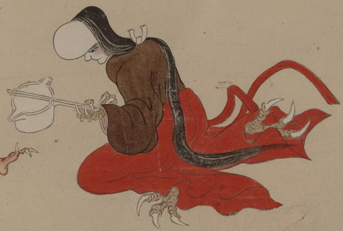

長柄銚子を持つ化物。額が以上に肥大しており、髪を長く伸ばし、女官のような格好をしている。手足は鳥のようで、長く鋭い爪が付いている。
出典：親書誌：U426_nichibunken_0154：妖怪絵巻；ヨウカイエマキ／日付：2010／資源識別子：U426_nichibunken_0154_0066_0000
Copyright (c)2010- International Research Center for Japanese Studies, Kyoto, Japan. All rights reserved.